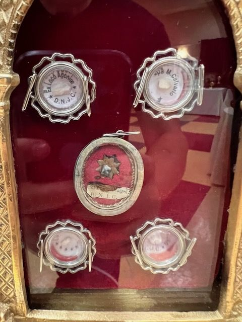

The label is in Latin
Holy Land rocks, five thecas
On the label
Ex Loco Agoniae D.N.J.C.… M. CalvarioColumn… Flagel. D.N.I.C.(two lower thecas not readable)
In English
From the place of the Agony of Our Lord Jesus Christ[From] Mount Calvary[From the] Column of the Flagellation of Our Lord Jesus Christ…
Saints named
The oval centre theca holds the Column of the Flagellation relic under a gilt star. The two small lower thecas cannot be read. These match the rocks listed on the card in IMG_0964.